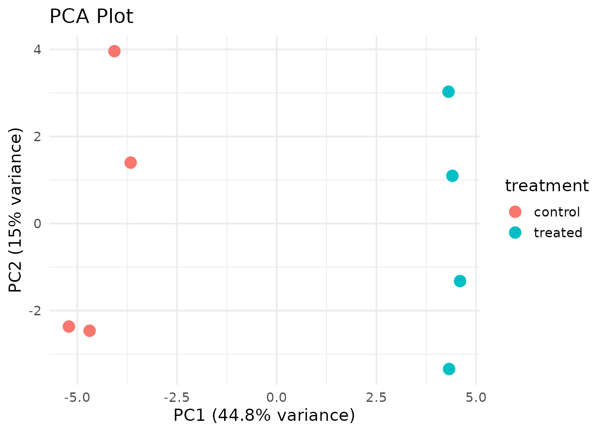
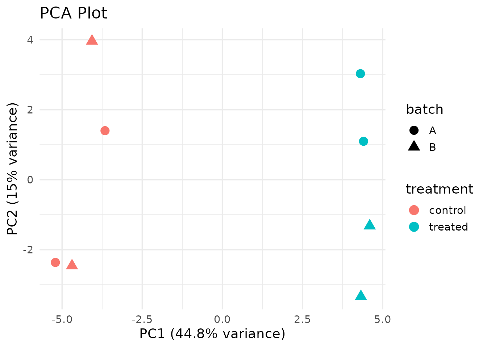

Getting Started with ADS 8192
Jared Andrews
2026-03-05
Source:vignettes/getting-started.Rmd
getting-started.RmdOverview
ADS 8192: Developing Scientific Applications teaches the “three interfaces, one core” architecture for scientific software in R. This package provides the reference implementation: a set of PCA analysis functions for SummarizedExperiment objects, a Shiny interactive explorer, and a command-line interface.
Installation
# Install Bioconductor dependencies first
if (!require("BiocManager", quietly = TRUE))
install.packages("BiocManager")
BiocManager::install(c("SummarizedExperiment", "airway"))
# Install the course package
remotes::install_github("YOUR-USERNAME/ADS8192")Quick Start
library(ADS8192)
# Load the example dataset (100 genes, 8 samples)
data(example_se)
example_se
#> class: SummarizedExperiment
#> dim: 100 8
#> metadata(0):
#> assays(1): counts
#> rownames(100): gene1 gene2 ... gene99 gene100
#> rowData names(2): gene_id gene_symbol
#> colnames(8): sample1 sample2 ... sample7 sample8
#> colData names(3): sample_id treatment batchRun PCA
result <- run_pca(example_se, n_top = 50)
# View the PCA scores merged with sample metadata
head(result$scores)
#> sample_id PC1 PC2 PC3 PC4 PC5 PC6
#> 1 sample1 -3.661089 1.400546 1.1513110 -2.9495180 -2.9900017 0.8073388
#> 2 sample2 -4.690739 -2.460840 -2.0430942 3.2092803 -0.9257690 1.9138380
#> 3 sample3 -5.210003 -2.364561 0.1337717 -0.8679711 0.5684443 -3.1293259
#> 4 sample4 -4.068511 3.959228 1.0888244 0.3559802 3.1898969 0.7659579
#> 5 sample5 4.404284 1.097518 -3.2408775 -1.8398335 0.2241627 1.0180449
#> 6 sample6 4.321797 -3.339700 -1.0686472 -1.3597673 1.6525663 0.1609117
#> PC7 PC8 treatment batch
#> 1 1.0179046 6.865967e-15 control A
#> 2 -0.1096081 7.192660e-15 control B
#> 3 -1.1712973 7.213094e-15 control A
#> 4 0.4207278 6.214588e-15 control B
#> 5 -2.2998585 6.303431e-15 treated A
#> 6 2.3134294 6.697588e-15 treated BVisualize
plot_pca(result, color_by = "treatment")
plot_pca(result, color_by = "treatment", shape_by = "batch")
Check Variance Explained
pca_variance_explained(result)
#> PC variance_percent
#> 1 PC1 4.481833e+01
#> 2 PC2 1.501521e+01
#> 3 PC3 1.346550e+01
#> 4 PC4 9.167293e+00
#> 5 PC5 7.225522e+00
#> 6 PC6 5.971530e+00
#> 7 PC7 4.336612e+00
#> 8 PC8 1.049730e-28The “Three Interfaces, One Core” Architecture
Package Core
make_se() → run_pca() → plot_pca()
↑ ↑ ↑
┌────┴────┐ ┌────┴────┐ ┌───┴─────┐
│ R API │ │ Shiny │ │ CLI │
│ (users) │ │ (web) │ │(scripts)│
└─────────┘ └─────────┘ └─────────┘All three interfaces call the same core functions. Fix a bug once, and it’s fixed everywhere.
Interface 2: Shiny App
ADS8192::run_app()